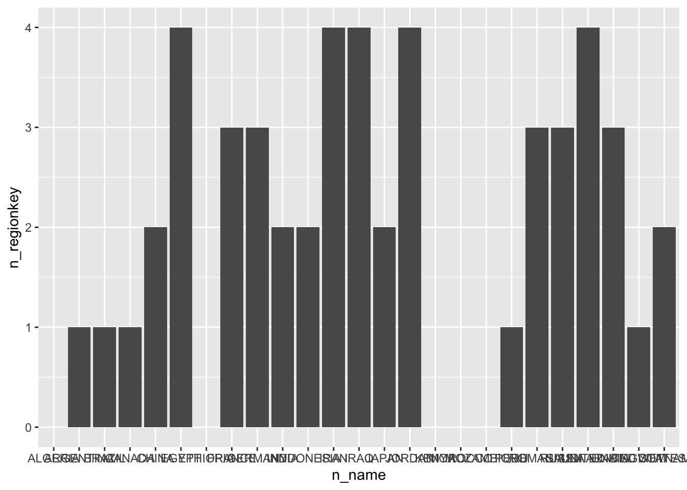
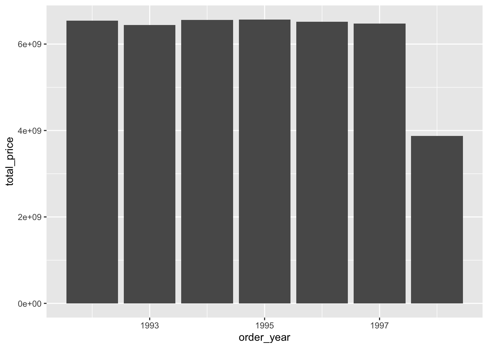
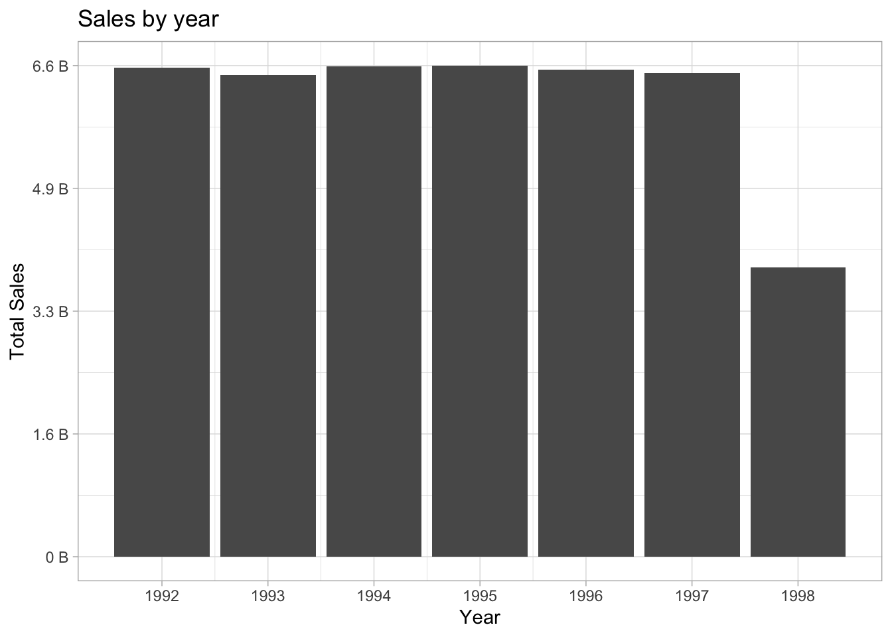
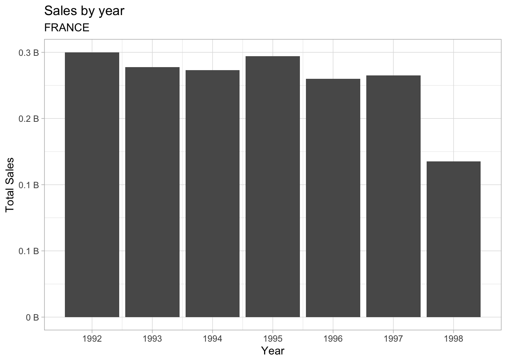
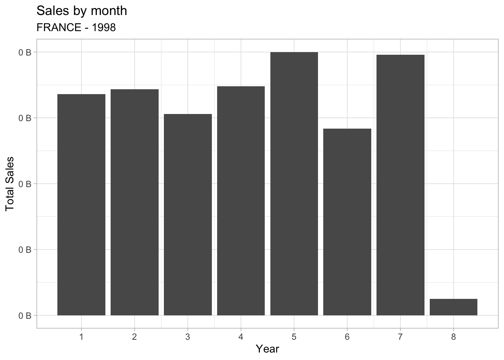

library(dplyr)
library(dbplyr)
library(DBI)
con <- dbConnect(
odbc::databricks(),
HTTPPath = "/sql/1.0/warehouses/300bd24ba12adf8e"
)
orders <- tbl(con, I("workshops.tpch.orders"))
customers <- tbl(con, I("workshops.tpch.customer"))
nation <- tbl(con, I("workshops.tpch.nation"))
prep_orders <- orders |>
left_join(customers, by = c("o_custkey" = "c_custkey")) |>
left_join(nation, by = c("c_nationkey" = "n_nationkey")) |>
mutate(
order_year = year(o_orderdate),
order_month = month(o_orderdate)
) |>
rename(customer = o_custkey) |>
select(-ends_with("comment"), -ends_with("key"))4 Visualizations
Catch up
4.1 Auto-collect
See how ggplot2 auto-collects data before plotting
- Load
ggplot2
library(ggplot2)- Plot the
n_nameovern_region_keyfrom thenationtable. Use the column geom.
nation |>
ggplot() +
geom_col(aes(n_name, n_regionkey))
4.2 Plot data
- Using
prep_order, pull the total sales by year (o_totalprice)
prep_orders |>
group_by(order_year) |>
summarise(
total_price = sum(o_totalprice, na.rm = TRUE)
) |>
arrange(order_year)
#> # Source: SQL [7 x 2]
#> # Database: Spark SQL 3.1.1[token@Spark SQL/hive_metastore]
#> # Ordered by: order_year
#> order_year total_price
#> <int> <dbl>
#> 1 1992 6543025198.
#> 2 1993 6444226635.
#> 3 1994 6554756505.
#> 4 1995 6568883526.
#> 5 1996 6514961386.
#> 6 1997 6470760974.
#> 7 1998 3871541964.- Add to the code, a step to plot the data. Use a column geom
prep_orders |>
group_by(order_year) |>
summarise(
total_price = sum(o_totalprice, na.rm = TRUE)
) |>
arrange(order_year) |>
ggplot() +
geom_col(aes(order_year, total_price)) 
- Download the results to R to a variable called
sales_by_year
sales_by_year <- prep_orders |>
group_by(order_year) |>
summarise(
total_price = sum(o_totalprice, na.rm = TRUE)
) |>
collect()- Preview
sales_by_year
sales_by_year
#> # A tibble: 7 × 2
#> order_year total_price
#> <int> <dbl>
#> 1 1994 6554756505.
#> 2 1997 6470760974.
#> 3 1995 6568883526.
#> 4 1992 6543025198.
#> 5 1993 6444226635.
#> 6 1996 6514961386.
#> 7 1998 3871541964.- Use
sales_by_yearto create the same plot
sales_by_year |>
ggplot() +
geom_col(aes(order_year, total_price)) - An example of what multiple iterations of the plot would result in
breaks <- as.double(quantile(c(0, max(sales_by_year$total_price))))
breaks_labels <- paste(round(breaks / 1000000000, 1), "B")
sales_by_year |>
ggplot() +
geom_col(aes(order_year, total_price)) +
scale_x_continuous(breaks = unique(sales_by_year$order_year)) +
scale_y_continuous(breaks = breaks, labels = breaks_labels) +
xlab("Year") +
ylab("Total Sales") +
labs(title = "Sales by year") +
theme_light()
4.3 Plot data by country
- Create a variable called
country, with the value “FRANCE”
country <- "FRANCE"- Modify
sales_by_year, by adding afilterstep to have then_namematch the value ofcountry
sales_by_year <- prep_orders |>
filter(n_name == country) |>
group_by(order_year) |>
summarise(
total_price = sum(o_totalprice, na.rm = TRUE)
) |>
collect()- Copy and use the same code from the finalized plot. Add a subtitle with the value of
country
breaks <- as.double(quantile(c(0, max(sales_by_year$total_price))))
breaks_labels <- paste(round(breaks / 1000000000, 1), "B")
sales_by_year |>
ggplot() +
geom_col(aes(order_year, total_price)) +
scale_x_continuous(breaks = unique(sales_by_year$order_year)) +
scale_y_continuous(breaks = breaks, labels = breaks_labels) +
xlab("Year") +
ylab("Total Sales") +
labs(title = "Sales by year", subtitle = country) +
theme_light()
4.4 Plot data by month
- Create a new variable called
year, load it with the value of 1998
year <- 1998- Using the same structure, create a new variable called
sales_by_month. In addition to country, the filter should include theorder_year. Group byorder_month
sales_by_month <- prep_orders |>
filter(n_name == country, order_year == year) |>
group_by(order_month) |>
summarise(
total_price = sum(o_totalprice, na.rm = TRUE)
) |>
collect()- Create the same finalized plot, but using
sales_by_month. Make sure to update the the axis, and aesthetics. Also, expand the subtitle to include theyearas well.
breaks <- as.double(quantile(c(0, max(sales_by_month$total_price))))
breaks_labels <- paste(round(breaks / 1000000000, 1), "B")
sales_by_month |>
ggplot() +
geom_col(aes(order_month, total_price)) +
scale_x_continuous(breaks = unique(sales_by_month$order_month)) +
scale_y_continuous(breaks = breaks, labels = breaks_labels) +
xlab("Year") +
ylab("Total Sales") +
labs(title = "Sales by month", subtitle = paste0(country, " - ", year)) +
theme_light()